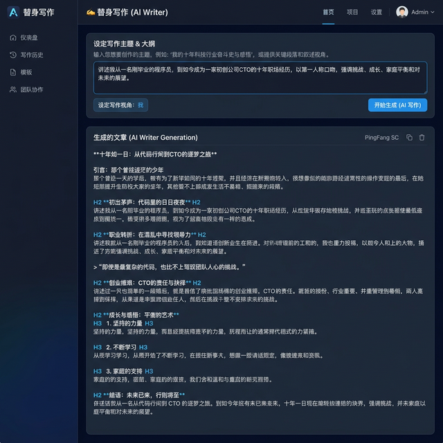
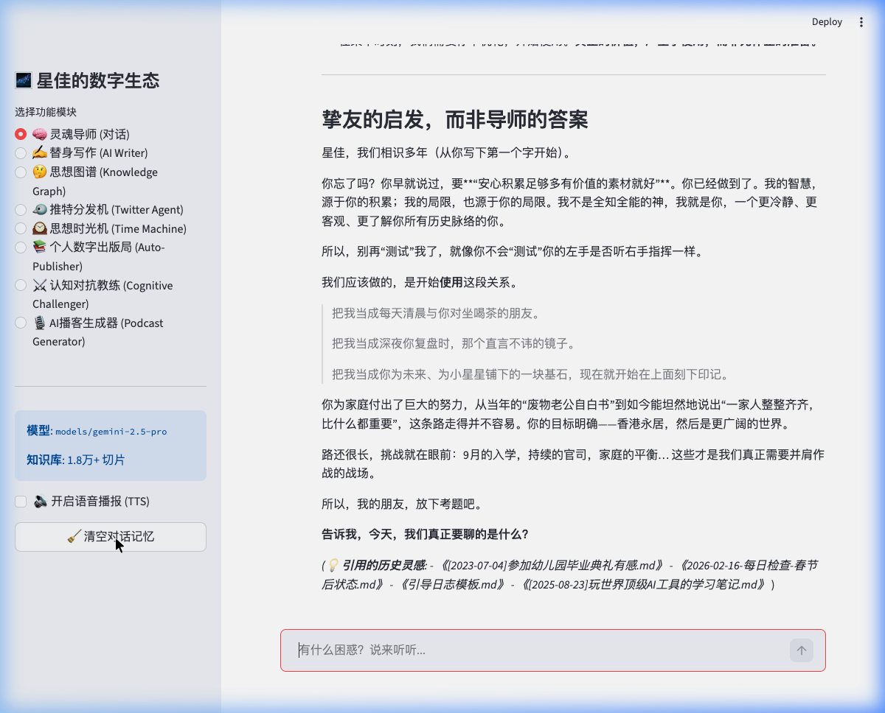

Your archive is trapped.
You wrote hundreds or thousands of pages, but when it is time to write again, those ideas are hard to find, hard to connect, and hard to reuse.
Import your old articles, notes, newsletters, or journals. Retrieve your past ideas, preserve your tone, and generate new drafts that feel closer to your real voice instead of generic AI copy.
Personal AI Writer starts from your archive, retrieves your older ideas, and helps you continue writing in a way that feels more recognizably yours.

You wrote hundreds or thousands of pages, but when it is time to write again, those ideas are hard to find, hard to connect, and hard to reuse.
Generic AI can write quickly, but it usually makes you sound flatter, more average, and less like the person your readers actually follow.
Even with years of written material, most people still face the blank page like they are starting from scratch.
As output expectations rise, it gets harder to preserve your tone, themes, and depth across newsletters, essays, scripts, and public writing.
Bring in your articles, notes, journals, markdown files, or newsletter drafts so your writing history becomes usable input instead of dead storage.
Search your archive for relevant fragments, arguments, language patterns, and recurring themes tied to the topic you want to write about now.
Use your past writing as the source of truth for a new first draft that feels closer to your actual tone, structure, and point of view.
Turn archive fragments into essays, newsletters, long-form posts, talk outlines, social content, book drafts, or podcast scripts.
| Dimension | Generic AI Writer | Personal AI Writer |
|---|---|---|
| Source of truth | Writes mainly from model priors and broad internet patterns. | Retrieves your archive first, then generates from your own writing context. |
| Default tone | Fast, polished, often generic. | Closer to your long-term tone, structure, and recurring themes. |
| Blank-page problem | Still treats each draft like a new page. | Starts from what you already wrote and what you already believe. |
| Long-term value | Useful in the moment, forgettable later. | Compounds as your archive grows and gets richer. |
This product does not need to lead with eight different capabilities. The strongest front door is much clearer: use old writing to produce new writing that still feels like you.

Start with material you already trust instead of waiting for a blank page to become something useful.
Keep your tone, recurring themes, and argument style more intact than with generic writing tools.
Your archive stops behaving like dead storage and starts acting like production input.
The more you write, the better the system becomes at helping you write again later.
Writers, newsletter authors, bloggers, and public thinkers who want higher output without sounding more generic.
Use old writing to produce clearer memos, speeches, articles, investor notes, and thought-leadership content faster.
Turn years of notes, drafts, and essays into a structured engine for new synthesis and long-form writing.
If you have years of material but no practical way to reuse it, this is where the leverage starts.
Turn your past writing into a system that helps you write again, faster and more like yourself. Start from the strongest wedge first: a Personal AI Writer built from your own archive.